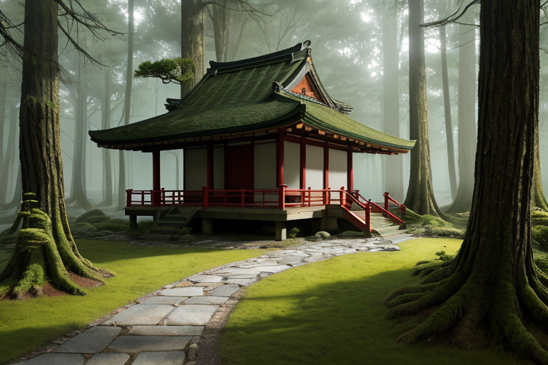
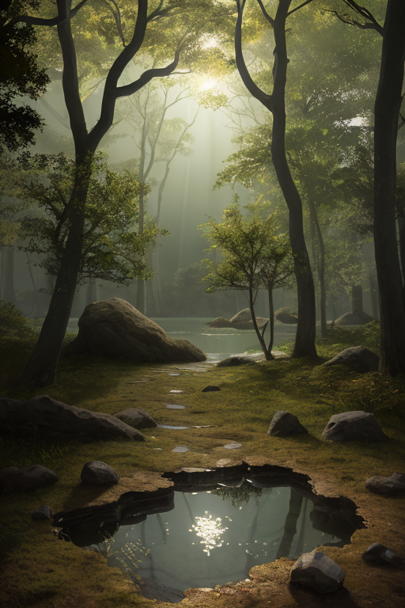
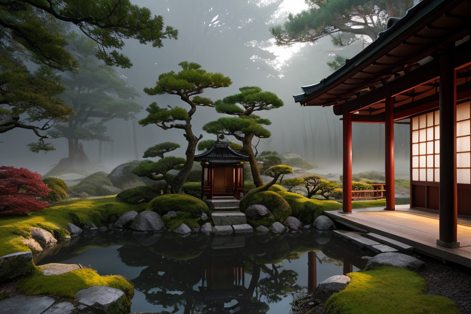
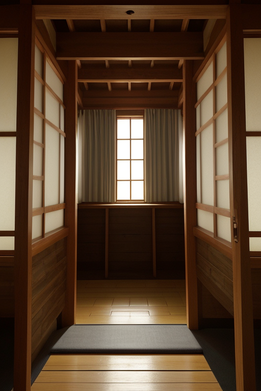
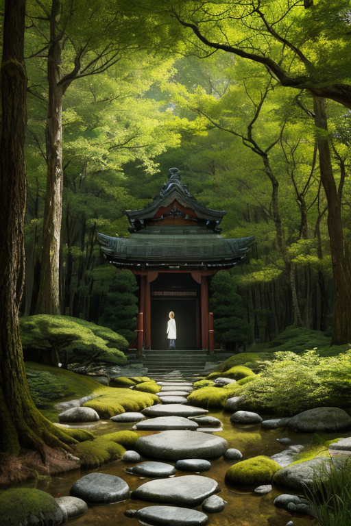

第一章 現実の福井
あなたはまだ気づいていない。この土地にも、王がいることを。
永平寺の杉並木は、七百年の沈黙を抱えている。苔むした石段を登る参拝者の足音は、深い緑に吸い込まれ、やがて無になる。坐禅堂では、微動だにせぬ修行僧の背中が、時間そのもののように見える。ここでは、すべてが「古い」。作法も、建築も、呼吸のリズムも。訪れる者は、時にこの完璧なまでの古さに、一種の息苦しさを覚えるかもしれない。これは停滞なのか、それとも──。
その問いが心をよぎる時、ふと足元の地面が、ごく微かに、ほんの一瞬だけ揺れることがある。誰も気づかぬ、震度0の震動。それは、この土地の王、フクイア・ストラタが、深い地層から歪みを吸収するための、最小限の「呼吸」だった。

第二章 歪みの兆候
永平寺の巨杉が、ごく僅かに梢を揺らした。修行僧たちの読経は乱れない。しかし、地中深く、ジュラミアが微かな警告を発した。古い地層に、新しい歪みの兆候が走ったのだ。
「東尋坊の断層面に、予定外の圧力が集積しています」
ストラリスの声は、永平寺の静寂そのもののように低く響いた。王は三方五湖の水面を見つめた。水は鏡のように静かだが、湖底の泥には、目に見えぬ亀裂が這い始めていた。
「古い秩序は、新しい力に抗う土台たり得るか」
王の問いかけに、ジュラミアは地層の記憶を辿った。恐竜が跋扈した時代の大変動、朝倉氏が栄華を築いた戦国の騒乱。すべてはこの「古さ」の上に起こり、そして沈静化していった。停滞ではない。膨大な時間が濾過した、強靭な基盤だ。
だが、今の歪みは違う。人間の営みが加速させた、浅く鋭い亀裂。王は目を閉じ、禅の呼吸のように、その力を地層の深部へと分散させ始めた。一瞬、永平寺の鐘の音が歪んだ。誰も気づかぬ、祈りのエネルギーそのものの、かすかな震え。

第三章 王の葛藤
永平寺の深い森の静寂は、王の内面に響く。地層を鎮める力は、同時に自らの存在の重さを増幅させる。古さは土台か、停滞か。この問いは、彼が人間の感情という名の「新しい地層」を内に積み重ねるたびに、より深く沈殿していく。
かつて王は、時間を濾過する装置に過ぎなかった。恐竜の絶滅も、朝倉氏の滅亡も、地質学的な事象として記録し、次の安定へと導くだけだった。しかし今、彼は「喪失」という感情を知る。三方五湖の水面に映る夕陽の美しさに、理由のない「切なさ」を覚える。それは、記録にはない、新たな層だ。
加速する人間の歪みを前に、古い方法だけでは限界がある。変わるべきか。変わらぬべきか。彼の内なるジュラミアは、過去の全てを保持しようとする。ストラリスは、現状の安定を訴える。沈黙の中で、二つの声がせめぎ合う。
彼は目を開けた。永平寺の庭に、一輪の水仙が揺れていた。何世代も前から、同じ場所で、同じ時季に咲き続けるその花は、変わらぬことの強さと、それ自体がもたらす孤独を、同時に物語っている。

第四章 妖精との対話
永平寺の坐禅堂。ストラリスは、王の傍らに沈黙を置いたまま座っていた。人間の祈りは、地層に染み込む水のように、ゆっくりと確かに、この土地の質を変えていく。それは物理的な歪みの調整とは、次元の異なる仕事だった。
「彼らの祈りは、地盤そのものではない」ストラリスが静かに口を開いた。「地盤を支える、心の地下水脈です。我々が岩盤の軋みを緩めるように、彼らの祈りは魂の軋みを和らげる。古い形式は、その水路を守る堤防なのです」
ジュラミアの声が、地層の記憶から響く。「変わるものと、変わらぬもの。この寺は、七百年、その両方を見てきた。坐る形式は変わらぬ。だが、坐る者の心は、時代と共に揺れ動く。変わらぬ形式が、変わりゆく心を支える土台となる。これが、『古さ』の意味です」
王は、掌に載せた越前海岸の小石を感じた。磨かれた無数の層。変わらぬことは、硬直ではない。長い時間に耐えるための、しなやかな強さの形。祈りは、個人を超え、層となり、この列島の感情の地盤を静かに補強していた。彼は、微調整の手を、目に見えぬその層へと、ほんの少し伸ばした。

第五章 微調整と余韻
永平寺の森は、深い静寂に包まれていた。王は、境内の片隅に立つ老杉の根元に手を触れた。その掌からは、祈りや坐禅によって積み重ねられた無数の精神の層が、微かな波として伝わってくる。それは、この土地の地質の記憶とはまた異なる、人の営みが紡いだもう一つの地層だった。
彼は目を閉じた。歪みの列島を流れる巨大なストレス。その圧力は、物理的な地盤だけでなく、人々の心の地盤にも、目に見えないひびを走らせようとしていた。王の役目は、それを修復することではない。彼ができるのは、この地に蓄積された「静」の層を、ほんの少し活性化させることだけだ。古層妖精ジュラミアが保存する地質の記憶と、永平寺に連なる祈りの記憶。その二つの「古さ」が共鳴するとき、人々の心に生じる不安の波紋は、ごくわずかながら、静穏へと整えられる。
東尋坊の荒波も、三方五湖の鏡のような水面も、変わらぬ営みを続けている。王は何も変えず、ただ、古くからのものが持つ「安定」の質を、今という時に微調整して届ける。それだけだ。
森の静寂が、ほんの少し深くなったように感じた。あなたの町にも、王がいる。